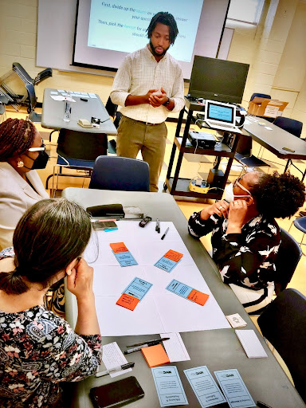
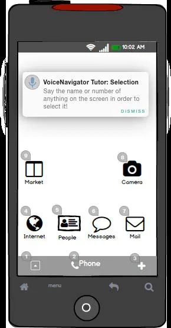
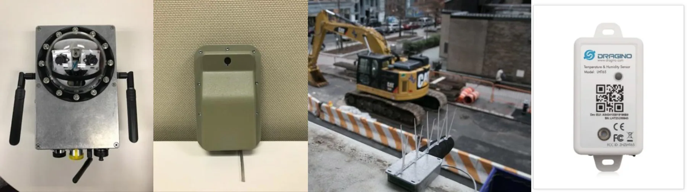

Study people's experiences, relationships, and institutions through fieldwork, qualitative inquiry, and usability research.
Eric Corbett / Design · Research · Teaching
I study how technology shapes people's lives. And design ways to change it.
I'm a design researcher and critical scholar working across emerging technology, public institutions, and everyday experience. I investigate how people and systems interact. I make and evaluate new possibilities. I lead collaborative design work. And I teach others to think critically through design.

How I work
Different settings.
One connected practice.
Sketch interactions, prototype alternatives, evaluate how they work, and revise the questions behind the brief.
Bring people with different expertise into the process, facilitate participatory work, and help research inform shared decisions.
Develop learning experiences, mentor designers, and make research useful beyond the project team.
Selected projects
Ideas made tangible.

Google Voice Access ↗
Research and interaction design that informed Google’s Voice Access for hands-free Android control.

Signs of the Smart City ↗
Led workshops with 40 New Yorkers to explore what public accountability for urban sensors requires.
Code Enforcer ↗
Led fieldwork and coordinated design and engineering for a housing-code support service.
Beyond the portfolio
Design, research, and public learning.
At Google, I studied humanlike generative AI, public participation, and community–industry collaboration. At NYU, I developed public AI learning experiences and contributed to New York City’s AI Strategy.
Working principle
“Participation is not only a way to gather feedback. It can change whose knowledge matters—and what problem we believe we're solving.”
A principle guiding my design research practiceExperience across settings
From labs to public institutions.
Research Scientist
Human-centered AI research within Google Research TASC, including humanlike generative AI, public participation, and community–industry collaboration.
Postdoctoral Researcher
Participatory design and civic technology research with public-sector and library partners.
Research, design, and technical practice
Accessible voice interfaces, digital civics, interactive machine learning, user research, and visualization.